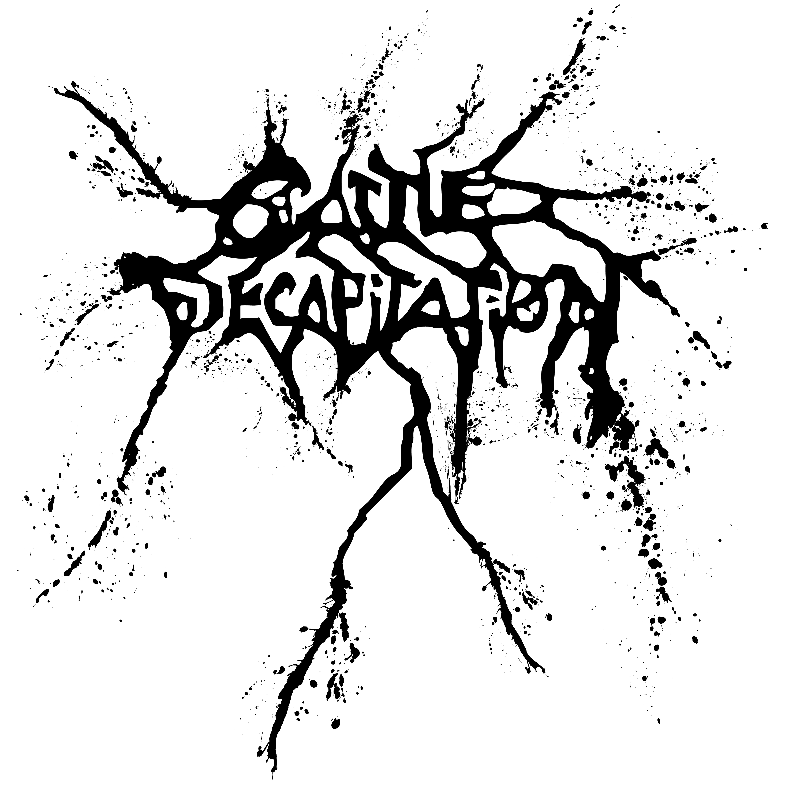

📅 12 Juillet 2025 - 20:00
📍 Bordeaux
Écouter sur


Cattle Decapitation est un groupe américain de death metal / grindcore fondé en 1996 à San Diego, en Californie. Portés par la voix hors normes de Travis Ryan, capable de passer de growls caverneux à des cleans mélodiques saisissants, ils se distinguent autant par leur brutalité musicale que par leur message : leurs textes dénoncent avec virulence la cruauté envers les animaux, la destruction de l'environnement et la place de l'être humain comme fléau de la planète. Albums comme Monolith of Inhumanity ou Death Atlas leur ont valu une reconnaissance internationale et une place de choix parmi les groupes les plus marquants du metal extrême contemporain. Sur scène, leur intensité est absolue — une expérience à vivre au moins une fois.